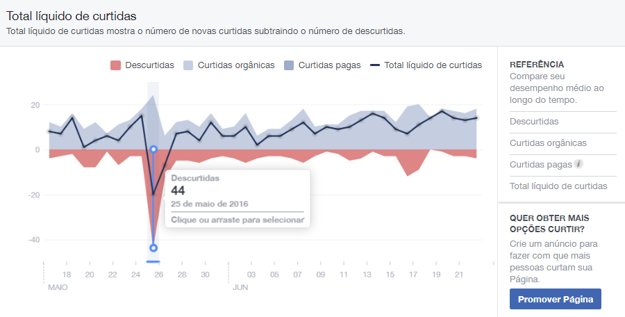

O desprezo dos indigentes
INTRODUÇÃO
O que realmente me motiva a escrever este artigo é mostrar a todos participantes do projeto eXcript e que possuem uma visão externa do projeto, como é a realidade desse tipo de iniciativa e como os brasileiros interagem com essas iniciativas.
A eXcript possui uma causa realmente nobre e ...